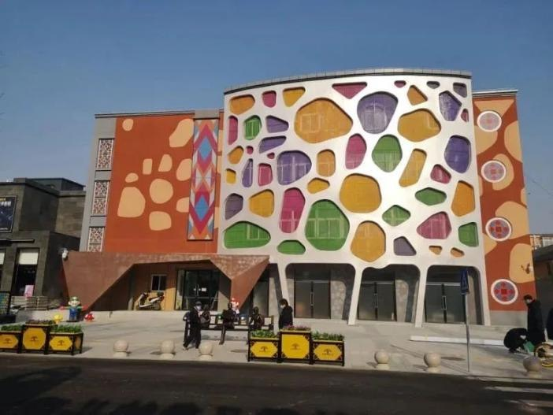

石景山图书馆少儿馆

作品：石景山区图书馆少儿馆古城南路馆舍外观（官方历史实景照片）
摄影：未署名；来源：北京市石景山区人民政府／北京石景山
拍摄日期（来源声明）：未标注（来源报道发布于2024-03-08）
来源与完整原图 · 区政府官网条件：资料性公共免费使用，保留来源
石景山区图书馆少儿馆古城南路馆舍外观的历史实景。来自官网对应场馆报道。不代表当前开放、展陈、活动或设施状态；实际拍摄日期及摄影者未单独标注。
将来源原图保留原始尺寸702×527，并进行JPEG压缩（质量参数72）；未放大、裁切、重绘、去人物或换背景。页面按容器缩放、裁显；完整来源见链接。